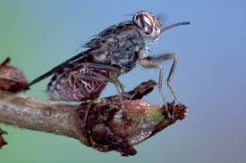
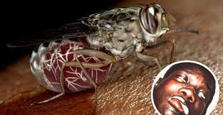

Ruồi có hình dạng tương tự các loại ruồi lớn khác. Loại ruồi này có một chiếc vòi luôn duỗi thẳng ra phía trước khi không chích. Là động vật hút máu, sống bằng máu con người và các loài động vật khác, vòi của chúng được sử dụng để hút máu cả người và động vật. Có thể sinh sản đến 4 lần trong năm. Sau khi giao phối, trứng sẽ nở và ở lại trong người con cái trong khoảng từ 9 đến 10 ngày trước khi chúng từ ấu trùng nở thành nhộng.
Ruồi xê xê là tác nhân truyền bệnh buồn ngủ gây chết người và lây lan bởi trùng tripanosoma (trùng mũi khoan). Khi bị ruồi xê xê châu Phi đốt, nạn nhân có triệu chứng cúm, mệt mỏi, sốt, đau đầu nghiêm trọng, sưng tấy và trong nhiều trường hợp sốt cao, nói lắp và động kinh sau đó là buồn ngủ và hôn mê sâu. Các vết cắn của ruồi ảnh hưởng đến gần nửa triệu người mỗi năm, trong đó có người bị chết do bệnh ngủ. Bệnh ngủ là một trong những căn bệnh nguy hiểm nhất ở châu Phi.
Ruồi xê xê, tên khoa học là Glossina, là một loài côn trùng hút máu và truyền bệnh nguy hiểm nhất thế giới. Chúng sống tại vùng nhiệt đới châu Phi và truyền bệnh ngủ, loại bệnh nguy hiểm nhất nơi đây, tới con người và động vật. Khi bị loài ruồi này đốt, nạn nhân xuất hiện các triệu chứng như đau đầu nghiêm trọng, mệt mỏi, sốt, sưng tấy, nói lắp, động kinh,... sau đó là buồn ngủ và hôn mê sâu. Căn bệnh này sẽ gây tử vong nếu các nạn nhân không được cứu chữa kịp thời.
Glossina sinh sản 4 lần trong năm và tuổi thọ của chúng kéo dài từ một đến 3 tháng. Loài này hút máu và truyền trùng tripnanosoma vào cơ thể nạn nhân mỗi ngày, ảnh hưởng tới gần nửa triệu người dân của 36 nước châu Phi mỗi năm.
